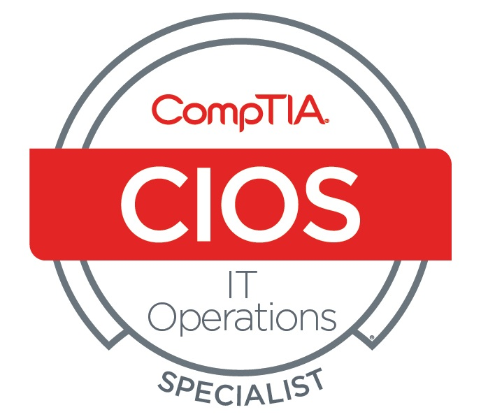

Welcome to My Portfolio
AI-native GenAI architect and ML engineer with 20+ years across software, infrastructure, and data systems. I design and build enterprise LLM, RAG, and agentic AI — with strong evaluation, observability, and governance — and specialize in governed, sovereign AI that runs securely on-prem, air-gapped, or in the cloud (Azure, AWS, GCP). Recent work includes QOR, a governed multi-agent platform for regulated industries.
This page showcases my projects in AI, machine learning, and data science. I've completed work through Western Governors University (BS in Data Management/Data Analytics), Udacity (Data Analyst Nanodegree), and various personal projects. Feel free to explore my projects and certifications below.
Skills
AI & Machine Learning
- Prompt Engineering
- Fine-tuning & LoRA
- RAG Implementation
- Agentic AI & Orchestration
- Multi-agent Systems
- Model Context Protocol (MCP)
- Structured Outputs
- Computer Vision
- Natural Language Processing
- Neural Networks
- Local LLMs (Ollama / vLLM)
Security & Governance
- Governed Agent Architecture (authority-gated actions)
- RBAC / ABAC
- Audit Trails & Append-Only Logs
- OAuth / OIDC
- Secure On-Prem & Air-Gapped Deployment
- Compliance-Aware Design (NIST 800-171, CMMC L2, ITAR/DFARS, SOC 2)
Evaluation & Observability
- Prompt Regression Testing
- Hallucination Reduction
- Structured-Output Validation
- Human-in-the-Loop Review
- Adversarial / Multi-Judge Review
- AI Observability & Monitoring
Knowledge Graph & Semantic
- Neo4j Knowledge Graphs
- Semantic / Graph-Backed Memory
- Entity Resolution & Deduplication
- Provenance & Source Grounding
- JSON-LD
- Embeddings & Vector Search
Data Engineering
- ETL Processes
- Data Modeling
- Data Processing & Wrangling
- Data Formats (Parquet, JSON)
- Database Design
- Data Warehousing
Business Intelligence & Visualization
- Data Analysis & Visualization
- Data Storytelling
- Dashboard Creation
- Insights for Non-technical Audiences
Software Development
- Application Development
- Algorithm Design
- Code Optimization
- Testing & Debugging
Project Management & Communication
- Project Management
- Stakeholder Engagement
- Technical Presentations
- Cross-functional Collaboration
- System Integration
Technologies
Programming Languages
- Python
- TypeScript
- JavaScript
- C++
- C#
- SQL
AI/ML Frameworks & Libraries
- LangChain
- LangGraph
- CrewAI
- Model Context Protocol (MCP)
- PyTorch
- Scikit-Learn
- Ollama
- vLLM
- Hugging Face
Web, API & Backend
- FastAPI
- Flask
- React
- Node.js
- REST APIs
- OpenAPI
Databases
- PostgreSQL
- MongoDB
- Microsoft SQL Server
- MySQL
- Oracle
- SQLite
- DynamoDB (familiar)
- Neo4j (graph)
- ChromaDB, FAISS, PGVector (vector)
Cloud & DevOps
- AWS
- Azure
- Google Cloud
- Docker
- MLOps / LLMOps
- GitHub Actions
- Azure DevOps
- CI/CD Pipelines
- Version Control (Git)
NVIDIA AI Stack
- CUDA
- NIM / NeMo
- Jetson (edge)
- DGX Spark
- Blackwell-class GPUs
Data & Visualization Tools
- Pandas
- NumPy
- Matplotlib
- Seaborn
- Tableau
- Jupyter Notebooks
AI Services & Models
- OpenAI / ChatGPT
- Claude
- Gemini
- Grok
- Llama & open-source LLMs
- Ollama & vLLM
- Image Generation
- Speech Recognition & Text-to-Speech
- Amazon Bedrock
- Google AI Studio / Vertex
Featured Work
QOR — Private AI WorkforceRDF Industries
A governed, sovereign AI substrate that runs entirely within your infrastructure. Built for regulated industries — defense, chemical manufacturing, biopharma, healthcare, and finance — and any organization whose work cannot leave its control boundary. QOR delivers multi-agent AI capability without sending data outside your walls. Visit QOR →
Designed for NIST 800-171, CMMC L2, ITAR, FIPS 140-3, HIPAA, and SOC 2.
Projects
Zygos — Modular AI Runtime
An open, modular, and inspectable AI runtime providing multi-provider reasoning, layered memory, tools, and skills through a composable architecture. v1 (TypeScript) is stable and usable today; v2 (Python, in development) adds a self-hosted web UI with voice. Built to be understood, extended, and trusted — from a local-first CLI agent to a production-grade orchestration layer. View Project
Local RLM REPL with Ollama & Qwen2.5-Coder
This extension to the Recursive Language Models (RLM) library enables a completely local, privacy-focused environment for deeply interacting with large codebases. By leveraging Ollama running Qwen2.5-Coder, it offloads context-heavy analysis tasks from expensive cloud models to your local machine. View Project
KeryxMaps - Multi-Platform Disaster Monitoring & Mapping System
A privacy-focused, multi-hazard monitoring and navigation platform delivering real-time disaster, severe weather, and space-weather intelligence across Android, iOS, Web, and desktop. Visit Site
Buildathon Contest Projects
These 6 projects showcase innovative solutions and applications built during (finalist project built after) the Buildathon hosted at the Snowflake offices in Menlo Park by DeepLearning.ai and AIFund.ai. View Project
n8n-mcp: AI Workflow Builder for Cursor
A Model Context Protocol (MCP) for Cursor that enables building n8n workflows using AI. Forked from czlonkowski/n8n-mcp. View Project
ExamPro.co GenAI Bootcamp 2025 - JLPT Language Tutor
Comprehensive AI-powered Japanese language learning system with LLMs, TTS, ASR, and image generation. Features interactive learning modules, visual novel gameplay, and JLPT N5 curriculum. View Project
Retrieval Augmented Generation
RAG implementation for improved AI responses with context. View Project
Multi-agent AI run locally
Project creating multiple agents using CrewAI that performs assigned tasks. View Project
Running an AI on my local PC - Project LUCI
LUCI is my voice operated and responding AI assistant. Details are in the README. View Project
Facial Recognition with Firefly Cast
Modified a Google Colab notebook to run locally using Jupyter. Used OpenCV for image display. View Project
Prompt Engineering Overview
Examples of effective prompt engineering techniques for various AI models. View Project
Python Development Portfolio
Comprehensive collection of Python applications, data analysis scripts, and machine learning experiments. Includes Jupyter notebooks demonstrating data manipulation with Pandas/NumPy, statistical analysis, algorithm implementations, and various coursework projects showcasing proficiency in Python ecosystem tools and libraries. View Project
C++ Programming Projects
Object-oriented programming projects and algorithms implemented in C++. Features coursework from Western Governors University and Udemy courses, demonstrating proficiency in memory management, data structures, algorithm optimization, and system-level programming concepts. View Project
Academic Projects
WGU Capstone: Machine Learning Recommender System
Comprehensive machine learning recommender system built using Kaggle dataset with collaborative filtering and content-based recommendation algorithms. Implemented data preprocessing, feature engineering, model evaluation, and performance optimization techniques to deliver personalized recommendations with measurable accuracy improvements. View Project
Unsupervised Learning: Customer Segmentation Analysis
Applied advanced clustering algorithms and dimensionality reduction techniques to identify distinct customer segments for a German mail-order company. Utilized K-means clustering, PCA, and statistical analysis to uncover actionable business insights and customer behavior patterns for targeted marketing strategies. View Project
Supervised Machine Learning: Charity Donor Prediction
Developed and optimized supervised learning models to predict potential charitable donors using demographic and behavioral data. Implemented feature selection, cross-validation, and hyperparameter tuning with algorithms including Random Forest and AdaBoost to maximize donation prediction accuracy. View Project
Statistical Analysis with R: Bicycle Sharing Data
Comprehensive data exploration and visualization project using R and ggplot2 to analyze bicycle sharing patterns. Performed statistical hypothesis testing, correlation analysis, and created publication-quality visualizations to identify usage trends and seasonal patterns in urban mobility data. View Project
Business Intelligence: Airport Delays Dashboard
Interactive Tableau dashboard analyzing flight delay patterns across multiple airports and airlines. Features dynamic filtering, trend analysis, and geographic visualizations to identify operational bottlenecks and seasonal patterns, enabling data-driven decision making for aviation stakeholders. View Project
Database Engineering: Music Streaming ETL Pipeline
Designed and implemented a complete ETL pipeline for a music streaming platform using PostgreSQL and Python. Built normalized database schema, automated data ingestion processes, and optimized query performance for analytics workloads supporting millions of song plays and user interactions. View Project
Data Science: Movie Database Investigation
Comprehensive statistical analysis investigating the relationship between objective movie characteristics (budget, runtime, genre) and commercial success metrics. Applied exploratory data analysis, correlation studies, and hypothesis testing using Python and pandas to identify key factors driving movie popularity and box office performance. View Project
Statistical Analysis: A/B Testing for Web Optimization
Rigorous A/B testing analysis to evaluate website conversion rate improvements. Applied statistical hypothesis testing, power analysis, and confidence interval calculations to determine the significance of user interface changes. Utilized Python for data analysis and provided actionable recommendations based on user behavior metrics. View Project
Certifications

CompTIA IT Operations Specialist
Stackable Certifcation: A+ and Network+
CompTIA Secure Infrastructure Specialist
Stackable Certification: A+ and Security+

CompTIA Project+
Verification Code: 9LCZMMKNXCR1Q69E